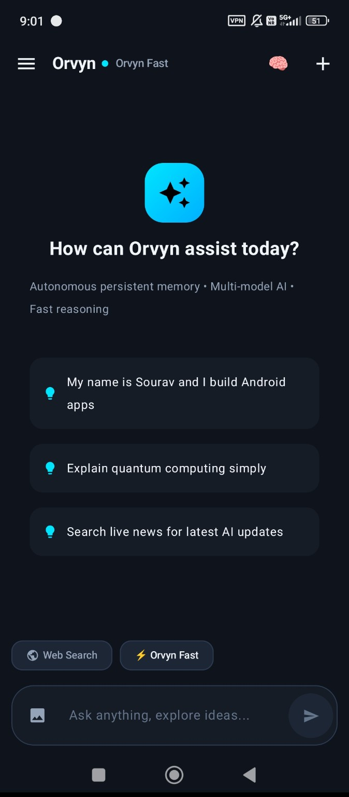

💬
Conversational Intelligence
An AI experience designed to help users ask questions, understand complex topics, solve problems and explore new ideas through dialogue.
CORE AI EXPERIENCEMore than a conversation. A vision for a more personal, adaptable and capable AI assistant. Orvyn is being developed to explore the possibilities of conversational intelligence, memory, research and multi-model AI.

A preview of the Orvyn interface.
Orvyn explores how different AI capabilities could work together in one accessible assistant.
Many AI experiences begin and end with a single question and answer. Orvyn's broader vision is to explore a more continuous experience: one that can understand conversational context, adapt its style, help investigate ideas and support creative work.
The project combines practical experimentation with a long-term ambition to make AI assistance more useful in everyday life.
The capabilities below describe Orvyn's development direction. Availability depends on the current build.
An AI experience designed to help users ask questions, understand complex topics, solve problems and explore new ideas through dialogue.
CORE AI EXPERIENCEExploring ways to retain useful context and preferences across conversations, so the assistant can offer a more consistent experience.
DEVELOPMENT AREAExperimenting with different AI models to balance response speed, reasoning quality, model availability and resource limits.
MODEL INTEGRATIONA research-oriented direction focused on accessing current information and helping users investigate topics with supporting sources.
RESEARCH CAPABILITYThe broader vision includes useful tools for everyday tasks, problem-solving, calculations and creative experimentation.
EXPANDING VISIONA focus on making the experience accessible and convenient on mobile devices, with an interface designed for everyday use.
ACCESSIBILITYOrvyn's design direction emphasises a recognisable conversational personality, clear communication and responses adapted to the context of a discussion.
The objective is not simply to make an assistant sound human. It is to create an experience that feels approachable while remaining useful, transparent about its limitations and focused on the user's task.
Every ambitious project has an origin story.
Orvyn grew from the experimentation behind SouravAI, the original AI assistant project that began this journey. Working with AI models, prompts and software tools helped shape a broader vision for a more personalised and versatile assistant.
SouravAI represents the beginning. Orvyn represents the next stage of that evolving vision.
Orvyn is an evolving project. Its development focuses on making the experience more useful while improving reliability and accessibility.
Refine response quality, usability, reliability and the mobile interface.
Develop useful context and memory features with appropriate privacy controls.
Explore reliable information retrieval, source attribution and research workflows.
Work toward a browser-based experience that visitors can test without installing an application.
Orvyn is being developed under Andronex Studio. A public browser-based demo is a goal for the project. Availability will be announced when the demo is ready.
Explore Andronex Projects →Orvyn is an independent project in development. Features and availability may change as development progresses. Planned capabilities are not necessarily available in the current build.